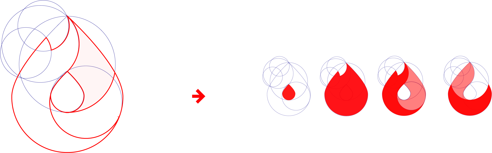
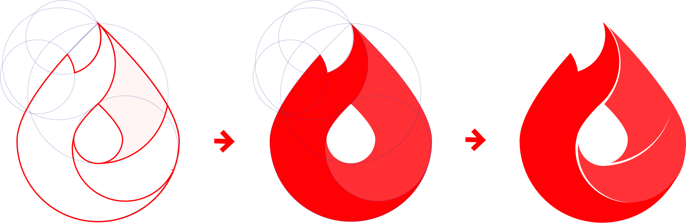
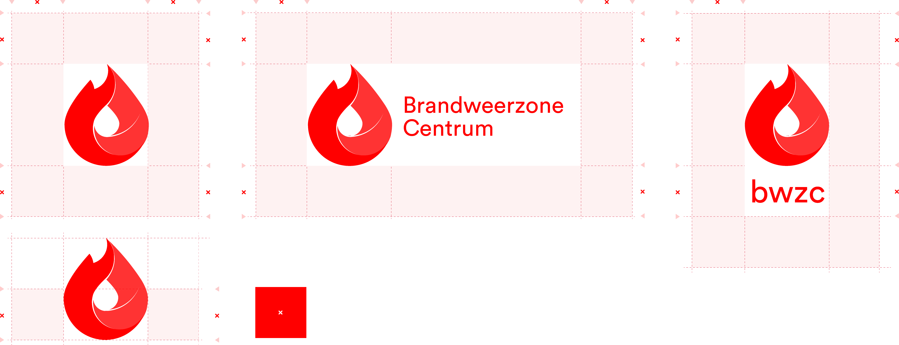
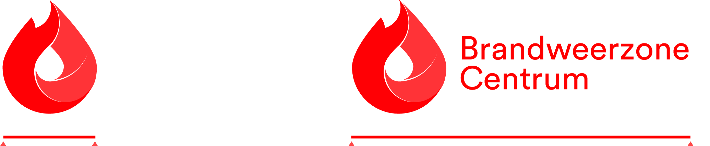

<!DOCTYPE html>
<html lang="en">
<head>
  <meta charset="utf-8">
  <meta name="viewport" content="width=device-width, initial-scale=1">
  <link rel="stylesheet" href="https://maxcdn.bootstrapcdn.com/bootstrap/4.0.0/css/bootstrap.min.css">

  <script src="https://maxcdn.bootstrapcdn.com/bootstrap/3.3.7/js/bootstrap.min.js"></script>
  <link rel="stylesheet" href="css/stylesheet.css">
  <link rel="stylesheet" href="css/style.css">
  <link href="https://fonts.googleapis.com/css?family=Roboto:300,600" rel="stylesheet">
  <link rel="stylesheet" href="https://use.typekit.net/leq0evp.css">
  <link href="https://fonts.googleapis.com/css2?family=Muli:wght@700&display=swap" rel="stylesheet">
  

  <title>BWZC</title>

</head>

<div class="text-center"></div>
    
    
      <section class="bg-gray">
    <div class="col-md-12">
          <div class='navigation container'>
              <ul class="row">
                  <li class="col-md-2"><a href="index.html">Home</a></li>
                  <li class="col-md-2"><a href="Logo.html">Logo</a></li>
                  <li class="col-md-2"><a href="Typografie.html">Typografie</a></li>
                  <li class="col-md-2"><a href="Kleurgebruik.html">Kleurgebruik</a></li>
                  <li class="col-md-2"><a href="Toepassingen.html">Toepassingen</a></li>
                </ul></div></section>
  
                <div class="text-center"></div>
  
      

    <section class="bg-white">
        <div class="container">
    <div class="row col-md-6">
      <h1>Het logo.</h1>
</div></div>
</section>


<section class="bg-white">
    <div class="container">
<div class="row col-md-10">
  <h3>Samenstelling.</h3>
  <p>
    Het logo is opgebouwd uit drie kernwaarden. Deze waarden staan centraal met de organisatie. De waarden bestaan uit: expertise, passie en samenwerking. 
    Tevens zien we ook het principe van de ontluikende roos wederkeren in het logo. 
    Daarnaast werd ook de hoofdletter ‘C’ gevormd binnen het logo. Hiermee benadrukken we de hervorming naar Brandweerzone Centrum. 
    <br><br>
    Het logo behoudt zijn traditionele kernmerken. De verwijzing naar het vuur, het water en de samenwerking van de organisatie. 
    Deze waarden zijn nu samengebracht in een vloeiend en coherent geheel zonder zijn waarde te verliezen. 
    Voor een veelzijdig gebruik bestaat het logo uit drie varianten. Het alleenstaande icoon, het icoon samengevoegd met een woordmerk en het icoon samengevoegd met 
    de afkorting van de organisatie. </p>
</div></div>
</section>


<section class="bg-white text-center">
    <div class="container">
<div class='row'>
    <div class="col-md-12">
        <div class="img"></div>
    </div>
</div> </div></section>


<section class="bg-white">
    <div class="container">
<div class="row col-md-12">
  <h3>Opbouw.</h3>
</div></div>
</section>


<section class="bg-white text-center">
    <div class="container">
<div class='row'>
    <div class="col-md-12">
        <div class="img"></div>
    </div>
</div> </div></section>


<section class="bg-white">
    <div class="container">
<div class="row col-md-10">
  <h3>Iconen.</h3>
  <p>Voor een veelzijdig gebruik kan dit logo ook alleenstaand als icoon gebruikt worden. Dit icoon mag enkel 
      gebruikt worden binnen publicaties die duidelijk de huisstijl van Brandweerzone Centrum weergeven.  
     <br> Hiernaast kan het logo ook voor webdoeleinden gebruikt worden</p>
</div></div>
</section>

<section class="bg-white text-center">
    <div class="container">
<div class='row'>
    <div class="col-md-12">
        <div class="img2"></div>
    </div>
</div> </div></section>

<section class="bg-white">
    <div class="container">
<div class="row col-md-10">
  <h3>Exclusie zone.</h3>
  <p>Rondom het logo dient er steeds voldoende ruimte 
      voorzien te worden.<br> Deze minimale ruimte baseren we op het logo zelf. Hiervoor hanteren we de helft van de grootte van het logo.</p>
</div></div>
</section>

<section class="bg-white text-center">
    <div class="container">
<div class='row'>
    <div class="col-md-12">
        <div class=""></div>
    </div>
</div> </div></section>


<section class="bg-white">
    <div class="container">
<div class="row col-md-10">
  <h3>Minimum formaat.</h3>
  <p>Het alleenstaand icoon moet minimaal 6mm groot zijn binnen een publicatie. Het logo met woordmerk moet minimaal 20mm groot zijn binnen een publicatie.</p>
</div></div>
</section>

<section class="bg-white text-center">
    <div class="container">
<div class='row'>
    <div class="col-md-12">
        <div class="img2"></div>
    </div>
</div> </div></section>


<section class="bg-white">
    <div class="container">
<div class="row col-md-10">
  <h3>Download hier het logo en icoon.</h3>
  <p class="">Download hier het zip-bestand van het logo en het icoon.
    Download hier het zip-bestand van het logo en het icoon.
   </p>

   <a class="btn-primary" href="Downloads/Logo&Icoon.zip" target="_blank" role="button">Download logo & icoon.</a>
</div></div>
</section>


<section class="bg-footer">
    <div class="container">
    <footer class="row footer">
        <div class="col-md-4"><p></p>
          <div class=""></div></div>

        <div class="col-md-4 text-center"><h6>Huisstijlgids voor Brandweerzone Centrum</h6>
          <p>Academiejaar 2019 - 2020<br>Een samenwerking van Steffi Boone en Arteveldehogeschool
        </p>
        <div class=""></div></div>

        <div class="col-md-4"><p></p>
      </div>
    </footer>

    
</body>
</html>


    <!-- Optional JavaScript -->
    <!-- jQuery first, then Popper.js, then Bootstrap JS -->
    <script src="https://code.jquery.com/jquery-3.2.1.slim.min.js" integrity="sha384-KJ3o2DKtIkvYIK3UENzmM7KCkRr/rE9/Qpg6aAZGJwFDMVNA/GpGFF93hXpG5KkN" crossorigin="anonymous"></script>
    <script src="https://cdnjs.cloudflare.com/ajax/libs/popper.js/1.12.9/umd/popper.min.js" integrity="sha384-ApNbgh9B+Y1QKtv3Rn7W3mgPxhU9K/ScQsAP7hUibX39j7fakFPskvXusvfa0b4Q" crossorigin="anonymous"></script>
    <script src="https://maxcdn.bootstrapcdn.com/bootstrap/4.0.0/js/bootstrap.min.js" integrity="sha384-JZR6Spejh4U02d8jOt6vLEHfe/JQGiRRSQQxSfFWpi1MquVdAyjUar5+76PVCmYl" crossorigin="anonymous"></script>
</html>